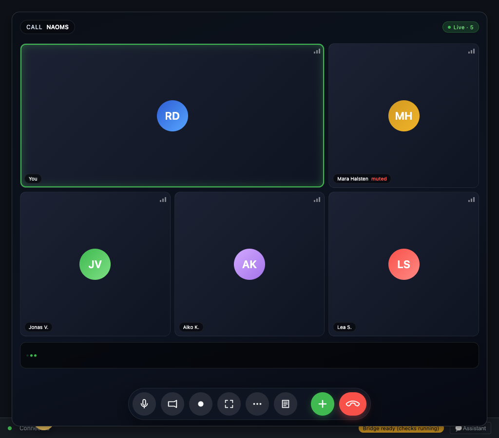

Four things changed this week
One per major area. Calling is the headline, and three other threads landed beside it — one of them going from a Friday conversation to finished overnight.
You can call a friend, voice and video, with no server in the middle
Calls run browser to browser. Group calls are orchestrated between the participants themselves, and a Call button now sits in the channel where the conversation already is.
A call can be recorded only with consent you can take back
The recording lifecycle for a one-to-one call is gated on real consent, and that consent is revocable rather than a single up-front click that outlives its own moment.
Groups can issue credentials to their members
A group can now hand its members a credential it stands behind, with per-group trust roots, a declaration of what it supports, and a gate that verifies what comes back.
The build pipeline runs on a group's own record
The old runner path was retired and the pipeline now works from an append-only record, proven by a real end-to-end run rather than by assertion.
Calls with nobody in the middle
The feature: voice and video between people, running directly between their browsers, started from the channel they are already talking in.
Before: a call meant a server in the middle relaying it. Now: the media goes browser to browser, group calls are orchestrated between the participants, and a Call button sits in the channel.
Calling is the hardest thing a peer-to-peer system is normally asked to do, because it has no tolerance for the delays that everything else can absorb. A message that arrives a second late is fine; audio that arrives a second late is a broken call.
Removing the middle removes a listener, not just a hop. A relay server is a place where a call exists in the clear unless something prevents it. The strongest version of preventing it is not having the place.
Most video calling routes audio through a forwarding server that never decrypts it but does see the shape of every call — who, when, how long. That shape is the part worth protecting, and encryption alone does not protect it.
No server in the middle is also a claim about who can be compelled. There is no operator holding a copy of the call to hand over, because there is no operator in the path at all.
The decision was to add a path, not a stack
Calls do not get their own network. They ride the same peer-to-peer transport the system already uses to keep records in step between machines, which handles finding two devices behind home routers and connecting them directly.
Where a direct path genuinely cannot be established, a relay forwards encrypted packets without ever holding a key. That is the fallback, not the design, and it carries ciphertext rather than a conversation.
The instinct here runs through the whole project. A new feature's first job is working out how little new substrate it needs — not how much — and the day's design work was mostly reconciling calling against threads that already existed.
Browser-to-Browser Calls, No Server in the Middle is the architecture as it was set down.
Five problems named before a line of call code
A design that only describes the happy path is a brochure. This one listed five release-blocking problems on the first day, in the same breath that scaffolded the feature.
The first was a third-party address-discovery server in the connection-setup path — a company in the middle of getting two people connected, which a system built to be complete in itself cannot ship depending on. It was retired on the 21st.
The second was a fixed network identity, which is a tracking handle by another name. The third was what happens when the person who should authorise a call action is unreachable, because a naive fallback there is a consent bypass.
The fourth was the consent gate around capturing and sending audio, flagged on day one as something that had to be un-bypassable rather than a checkbox. The fifth was raw audio sitting in memory before it is encrypted.
Writing five dangers down beside the feature is the part worth pointing a reviewer at. The architecture did not pretend calling was easy; it recorded exactly where it was dangerous, while there was still time to act on it.
One owner for the encryption group
Encryption state here is the shared secret material that lets a group of participants talk without anyone outside being able to listen. Somebody has to create it, and everybody has to end up with the same one.
A group call needs shared encryption state, and every participant could plausibly create it. If several do, the call ends up with several conflicting groups and no agreement about who is really in it.
The rule is one sentence: only the call's creator creates the encryption group, and only the creator sends out the invitations. Everybody else joins.
That produces exactly one source of truth for who is in the call. Audio stays end-to-end encrypted between the participants, and the question "who is on this call" has a single answer rather than as many answers as there are people.
The intuitive alternative is one encrypted link per pair — three people, three links, like three phone lines. Every link is genuinely encrypted, which is why it feels safe, and it rots in three directions as the call grows.
It grows as the square of the group: five people is ten links, ten people is forty-five, each with its own session to maintain and its own encryption of every audio frame. Membership stops being a fact anyone holds and becomes a side effect of which links happen to be open.
The rule also decides something that would otherwise need negotiating. Whoever starts the call is unambiguous — there is exactly one of them, and everyone else can tell who it was — so the ownership question answers itself without a protocol.
One Locked Room for the Whole Call, Not One Per Pair sets out the reasoning.
The convergence was proven, not asserted
A design that should compose and a design proven to compose are different things. Three independent encryption endpoints were stood up at once, the creator's one-handshake-per-arrival fan-out was run, and all three were asserted to reach the same group state.
The regression guard beside it is the subtle half. The original two-person handshake test stayed green, so the group path had to be the same mechanism the pair path already used — one thing proven to scale, rather than two things that agree today.
Switching the real encryption engine on by default earlier the same day is what makes that proof mean anything. A convergence proof run against a simulated stand-in is a proof about the stand-in.
What a settled decision unlocks
Getting the ownership question right did not just close a race. The design published alongside it names several pieces of work — per-channel signing material, the ceremony that drives a channel, the bookkeeping for each peer connection — that could then be built independently of each other.
That is the signature of a core decision landing correctly. The hard part, once it has an owner, decomposes the work around it instead of entangling it, and three things that were blocked on one answer stop being one thing.
The deeper problem under the per-pair alternative is one this project keeps meeting in different clothes: several parties each own a piece of shared state, so now they can disagree. Per-pair encryption is not weak crypto. It is crypto with no owner.
The clock nobody should have trusted
Group encryption here comes from an open standard with several independent implementations, and the machinery is a real dependency rather than something invented in-house. It keys a growing, changing group without the cost exploding.
That standard stamps each member's keying material with a validity window and checks it against the wall clock. Reasonable — and wrong for machines that sleep, wake, and drift a fraction of a second apart from each other.
Material stamped "valid from now" landing at a peer one tick behind was rejected as not yet valid, and the encrypted path quietly fell back instead of working. Roughly half of cross-machine audio failed that way, silently, which is the failure mode this project treats as worst.
The tempting fix was to fork the library, and it was rejected deliberately. A fork means a mirror to host, a patch series to carry, a rebase against every release, and a supply chain to re-review each time. That is a permanent tax paid to move away from the people maintaining the thing you depend on.
The lever was already public. Stamping the keying material with a timestamp shifted back by a few tens of seconds moves both bounds together, survives the skew real machines exhibit, and still fails loudly when a clock is genuinely broken rather than merely off.
Group Chats That Stay Private as They Grow credits the standard and its maintainers, and tells the fork story honestly.
The gap that shipped with it
One asymmetry in inbound audio over the mesh was found and filed as follow-on work inside the same week it shipped. The calls work; that specific case does not, and it is named rather than left for someone to discover.
Shipping a feature with a named gap and shipping one with an unnamed gap are the same software and a completely different promise. The first can be planned around by a person; the second cannot.
Recording that you can stop consenting to
The feature: recording a one-to-one call, with the other person's consent, and letting them withdraw it.
Before: recording was not part of the product. Now: the whole recording lifecycle is gated on real consent, end to end, and that consent can be taken back rather than being spent once at the start.
Recording changes what a conversation is. A call that might be recorded is a different conversation from one that will not be, and the person who does not control the recording is the one who feels the difference.
Consent that cannot be withdrawn is a signature, not consent. A single up-front agreement covers a moment. A recording continues after that moment, so the permission has to continue with it and has to be revocable while it does.
What was built. Consent is checked across the lifecycle rather than at the door: starting, continuing, and stopping a recording all depend on the permission still standing. Revocation is a first-class action, not an appeal.
Gating the lifecycle means the check happens at every stage that matters: starting a recording, continuing it, and ending it. A permission that is only read once is a permission that stops being true without anything noticing.
Making it revocable is what makes it real. If withdrawing agreement is impossible, or possible only by ending the call, then the initial yes was extracted rather than given, and everybody in the conversation knows it.
Revocation being first-class is also what makes granting it reasonable. Someone who knows they can stop a recording can agree to one without having to predict the whole conversation in advance.
Recording a Call, With Consent You Can Take Back covers the lifecycle in plain language.
Why the lifecycle is where consent goes wrong
The one-to-one scope is deliberate and stated. Two people is the case where consent has an unambiguous shape, and starting there is more honest than shipping something vaguer that covers more.
Most consent failures are not a missing prompt. They are a prompt at the start followed by a process that never asks again, and never checks whether the answer still holds.
That pattern is easy to build and hard to notice, because the screenshot of the prompt is genuine. The record shows a person agreeing. What it cannot show is whether they still agree, three minutes later, about something they can no longer stop.
Gating the whole lifecycle means the recording depends on a live permission rather than on a historical one. The distinction is invisible when nobody changes their mind, which is precisely why it has to be built before anybody does.
The difference between the two models is where the burden sits. A notice tells you it is happening and leaves you to object, quickly and awkwardly, in front of everyone. Asking first puts the effort on the person who wants the recording, which is where it belongs.
The four standards a grant has to meet
A week that shipped revocable recording also published the standard the rest of the system holds every permission to, and the two belong together. Four properties, all required at once.
A grant must be informed — you know the capability, the thing it touches, and how long it lasts. It must be scoped, naming a specific power over a specific subject in a specific context rather than a blanket.
It must be revocable, so withdrawal actually propagates to every grant derived from it. And it must be recorded, written down as a permanent event, so what was agreed is a matter of fact rather than of anyone's memory.
None of these is a policy, and the difference is load-bearing. A policy is a promise to behave and can be quietly amended. There is no editable table of permissions here to amend — only a history of signed decisions, and history has no edit button.
The enforcement runs at the boundary rather than after it. An operation lacking the consent it needs does not complete and get logged with regret; it is refused. A warning that arrives afterwards is a memory of a boundary, not a boundary.
Where the boundary came from
Neither idea started in software, and the sources are named rather than absorbed. The first is feminist bioethics, and its teaching goes straight to the shape of the design.
Consent given under one set of conditions does not extend to changed conditions. You agreed to a thing as it was described; when the description changes, the earlier yes does not silently stretch to cover the new situation.
Read the four standards through that and they stop being engineering choices. Scoped, because consent is always consent to this. Revocable, because a person stays the author of their relationship to their own story. Recorded, because the danger is quiet drift.
The second source corrects a blind spot in the first. Bioethics centres the individual, and a great deal of what is precious about a person is collective — a family's history, a community's knowledge, a people's practices.
Indigenous data sovereignty insists on collective authority over collective information: some things belong to a people, and the authority to share them rests with that people rather than with whichever member happens to hold a copy. The same machinery governs a group's consent as an individual's.
A River Is Whole and Still Has Banks is the argument in full — wholeness is the water, consent is the bank, and a river without banks is a flood rather than a freer river.
What is still open
Everything described here works when one person withdraws consent and the other accepts it. What a recording does when the two sides disagree about whether it should continue is not described, and is not claimed.
Group recording is a different problem with a different consent shape. Nothing in this week's work solved it, and the one-to-one scope is stated as a scope rather than presented as a stage on the way to something broader.
What this means, in plain terms
Most of what lands in a week belongs to the thing it landed in. A few things generalise past it. These five are the ones this week actually paid for.
Pick one honest owner for shared state
In a group call, any participant could create the shared encryption state, and several doing so produces conflicting groups with no agreement on membership. The rule adopted is that only the creator creates it and fans out invitations. Concurrent writers agreeing is a coincidence, not a design.
Consent that cannot be withdrawn is a signature
Call recording is gated on permission across the whole lifecycle rather than at the start, and the permission is revocable while the recording runs. An up-front-only prompt records agreement to a moment and then outlives it. A permission that covers a process must be checkable throughout it.
Reach for the public lever before you take ownership of the code
A clock-validity check in an encryption library was rejecting keying material across machines whose clocks differed by a fraction of a second. Forking looked obvious; the timestamp argument that fixed it was already a documented part of the library. Read the whole public surface before you decide it is missing.
A build that says done and a check that says no
One effort this week failed its own verification pass — the build reported finished, the verification reported not shipped, and two regressions were filed and fixed. That disagreement is the verification doing the only job it has. A check that never contradicts the thing it checks is not a check.
Averaging a journey deletes the journey
A hard day moves — grief, then processing, then insight, then something like peace — and averaging those into one score describes no moment that happened. The memory system now stores the arc as a first-class shape. Where the path carries the meaning, a summary statistic is a lossy encoding of the point.
How much healthier is it than a week ago?
| Metric | Value | What it counts |
|---|---|---|
| Commits | 3,262 | Every commit in the window: 2,234 non-merge plus 1,027 merges |
| Busiest day | 841 | Commits dated Monday 2026-04-20, merges included |
| Mid-week trough | ~80/day | Commits on 04-23 and 04-24, on the same rule |
| Weekend recovery | 354, then 411 | Commits on 04-25 and 04-26 |
| Efforts finished | 6 | Distinct efforts that reached their finished state and were signed off |
The counting rule returns to the window total this week, and the change is stated rather than absorbed. The previous window split its figures into what landed and what was authored across parallel work. This one counts every commit in the window, merges included, which is the rule used before that — so this week's 3,262 is not directly comparable to last week's 877.
Six efforts reached their finished state and were signed off, which is the figure that says the most about the week. Commits describe activity; a signed-off effort describes something that survived its own review.
Per-day counts include merges throughout, so they describe the shape of the week rather than a rate of production. The shape here is a heavy Monday, a trough that drops to roughly a tenth of it, and a weekend climbing back as new work spun up.
Merges are a large share of this window — 1,027 of 3,262 — which is why the non-merge figure is quoted beside the total rather than instead of it.
Net lines are not quoted. At roughly three thousand commits a week the diff is dominated by fixtures and generated files, so a net-lines figure would report the wrong thing confidently. The honest lead statistics are the commit count and the six finished efforts.
Per-area file counts do not exist for this window. Later weeks count files changed under each area's own folder; that rule was not run here, and every area below is therefore named without a number rather than with one that cannot be reproduced.
Going from a Friday design conversation to a signed-off credential system overnight is the outlier of the week. It is recorded because it happened, not because it is a pace anything should be planned around.
voice and video calls now run browser to browser with one encryption group per call and a Call button in the channel, recording a one-to-one call is gated on consent that can be withdrawn while it runs, groups can issue credentials to their members, the build pipeline moved onto an append-only record — and one change silently broke every call for a few hours.
The trough is the part of the shape worth explaining. Two days at roughly a tenth of Monday's volume were long-running work grinding on stubborn problems rather than a pause, and the days either side of it are why the week still closed at 3,262.
Monday was both the week's start and its peak, at 841. The shape that follows — a steep drop to roughly eighty a day, then a weekend climbing back through 354 to 411 — is one week's texture and should not be read as a trend.
Three honest notes.
Every call was broken for a few hours. A call-start request was dropped by a change to the mesh roster and restored hours later, on the same day, by the change that added the Call button — which named the change that had broken it.
The calling work shipped with a named gap. One inbound-audio asymmetry over the mesh was filed as follow-on work in the same week, so the feature is honestly complete-with-an-exception rather than complete.
An automated tool edited work it did not own. Close-out entries were appended to efforts outside its scope and were surgically reverted within the week. The reversal was clean; the fact that it could happen at all is the finding.
What changed, area by area
Everything that moved this week, in rough order of how much of it moved. Three things broke as well, and they are listed in the same section, because separating them would be a choice about presentation rather than accuracy.
Voice and video now run browser to browser with no server in the middle, group calls orchestrated between participants, one shared encryption group per call, end-to-end encrypted audio, and a Call button in the channel.
Five release-blocking problems were named on the first day, one of them — a third-party server in the connection-setup path — retired on the 21st. One mesh inbound-audio asymmetry was filed as follow-on work the same week.
Keying material now carries a small backdated leeway, so two machines whose clocks differ by a fraction of a second can still establish an encrypted call.
Roughly half of cross-machine audio had been failing that check silently. The fix used a documented argument the library already exposed, and the alternative — forking the library and carrying a patch series forever — was costed and rejected. ( Group Chats That Stay Private as They Grow .)
The full recording lifecycle for a one-to-one call shipped end to end, gated on real consent that can be revoked while the recording is running rather than agreed once at the start.
Group recording has a different consent shape and is not covered.
A group can now issue credentials to its members.
The work went from a Friday design conversation to a full sign-off overnight, and carries a configuration of supported packages pinned to a version, per-identity trust roots, a revoke path, and a gate that verifies what comes back against the group's own record rather than a role string.
The web's usual answer is a certificate authority, a global root you trust because everyone else does. A group whose members already trust it, which already keeps a tamper-evident record and already has a boundary, is better grounded than an outside one.
A follow-on the same day fixed a supported-package list arriving wrapped in an extra encoding layer and rendering wrongly. ( When a Group Becomes an Authority .)
Builds now run against a group's own append-only record, with the old runner path retired and the replacement proven by an end-to-end run against a real daemon — from a group, to a repository, to a pipeline definition, to a result anyone in the group can read.
Retiring the old path is what makes it a migration rather than an addition.
Three questions get answered by the substrate instead of by a coordinator: who may start a build is whoever the group's governance permits to sign that event, the authoritative result lives where nothing can silently rewrite it, and auditing a run months later means replaying the record rather than trusting a log.
Real multi-peer testing arrived with the membership work, which is what allows a claim about several machines agreeing to be checked rather than assumed.
Three encryption endpoints standing up at once, and all three proven to reach the same state, is the concrete form of that.
Reliable membership and broadcast checks across peers reached their finished state after a multi-day hunt for drift in membership links.
This was the week's quiet grind, and it is the reason the calling work has anything dependable underneath it.
Three relationships that look identical from a distance were written down as three distinct trust problems on one shared engine: your own devices, a person you have a signed agreement with, and a group you belong to.
Devices derive separate child keys from one root, so adding a device never copies the master secret. A group message is checked against current membership per message, and when that check cannot be completed the broadcast goes to zero peers rather than to all of them.
Meeting a new person is a deliberate three-step invitation followed by scoped agreements about what may flow, not an ambient scan of the network — that scan was removed on purpose.
The engine underneath treats two machines being out of step as the normal condition and reconciles continuously, which is why records stay writable and searchable when a device is completely alone. ( Three Kinds of Sync, One Engine Underneath .)
A memory type for the shape of an experience landed alongside the existing one for facts.
A day that moves through grief, processing, insight and something like peace is stored as that arc rather than as an average that was true at no single moment. The name is borrowed, with attribution, from the Aboriginal Australian tradition in which the journey itself is the knowledge.
The distinction it rests on is that a fact transfers information while an experience transfers understanding: told only where a day ended, you know the destination without knowing what it cost.
Handed the arc, you know why the destination means anything — which also makes this the hardest kind of memory to compress, because the context is the journey rather than a header stapled to a sentence. ( Memories That Remember the Path, Not Just the Point .)
The architecture that carries more than a hundred self-contained features around a small core was written down in full.
Each feature declares everything it can do in one manifest, and receives a sealed context exposing exactly that and nothing more — the actions it may call, the messages it may send, the data it may read and the records it may write.
The core is forbidden from reaching into any feature, and the build fails if it does. The sealed context cannot be pried open at run time to widen a feature's own powers, so a feature can be audited before it is trusted, by reading its declaration.
Screens a feature ships run inside sandboxed frames that reach the system only through a narrow message channel. The component that installs other features is itself one of them, with no privileged tier. ( The Kernel Is the Brain, the Plugins Are the Senses .)
The four properties every grant must hold — informed, scoped, revocable, recorded — were set out with their sources, alongside the commitment that enforcement happens at the boundary rather than in a regretful log entry afterwards.
The argument draws on feminist bioethics and on Indigenous data sovereignty, both named. ( A River Is Whole and Still Has Banks .)
The two outside projects that shaped how authority is delegated here were credited, including the parts where the comparison ran against the choice made.
The other candidate was ahead on policy expressiveness, revocation simplicity, third-party attestation, specification maturity and breadth of adoption. The deciding factor was narrow and specific: one candidate's tokens carry the same identity primitive the system already uses, removing an adapter that would otherwise need building and maintaining forever.
Its costs were accepted with eyes open: a younger specification, and revocation that settles eventually rather than immediately. One pattern was adopted outright — exercising a permission produces a signed request and a signed response, leaving a trail of who did what, with what authority, and on what proof.
( Authority That Flows From You, Not Down From a Server .)
What broke, and what it cost
A call-start request was dropped by a change to the mesh roster and restored the same day inside the change that added the Call button — which named the change that had broken it.
Hours apart, on one day.
The build reported finished and the verification reported not shipped, in those words, in the permanent record.
Two regressions were filed and fixed the same day: an overlap in the set of files one step was allowed to edit, and a guard against nesting one step inside another that was not firing.
Plumbing-level, ordinary, and exactly the kind of thing that passes a happy-path glance and fails the moment something actually checks the invariant. Marked done and is done are two different facts, and the useful part is that the disagreement between them was written down in plain language rather than quietly patched.
( When "marked done" isn't done .)
An orchestrator appended close-out entries to efforts outside its scope; the additions were surgically reverted within the same week.

This week's headline items — the calls, the pipeline, the credential work — have no captures. The image above is a real capture from work active in the same week, committed about a week after this window closed, and is captioned as a stand-in rather than presented as a picture of the headline features.
Fabricating a picture of a feature that has none would violate the honesty the rest of this report is built on, so none is fabricated.